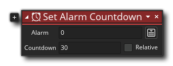

Beschreibung
Dieser Aktionsblock setzt einen bestimmten Alarm auf Countdown, und wenn der Alarm Null erreicht, wird das zugehörige Alarm-Ereignis ausgelöst. Sie geben die Alarmnummer von 0 bis 11 und dann den Wert für den Alarm ein. Der verwendete Wert ist die Anzahl der "Spielschritte", die Sie durchlaufen müssen, bevor das Alarmereignis ausgelöst wird, und Sie können dies relativ zum aktuellen Alarmwert einstellen (Addieren oder Subtrahieren zum aktuellen Wert). Beachten Sie, dass der Wert ein ganzzahliger Wert sein muss, und Sie können ihn auf -1 setzen, um den Alarm zu stoppen. Beachten Sie, dass bei einem Countdown eines Alarms das Ereignis ausgeführt wird, wenn es den Wert 0 erreicht. Der Alarm zählt jedoch bis auf -1 herunter, um anzuzeigen, dass er beendet wurde. Wenn Sie einen Alarm auf 0 setzen, wird das Ereignis nicht ausgeführt, da es dann bis zum nächsten Schritt -1 zählt. Um also sofort einen Alarm auszulösen, sollte dieser Wert auf 1 gesetzt werden. Beachten Sie, dass Sie in derselben Aktion zusätzliche Alarme einstellen können Plus-Symbol
neben der Aktion.
Aktionssyntax:
Argumente:
Streit Beschreibung Alarm Der einzustellende Alarm (das entsprechende Alarmereignis wird ausgelöst, wenn 0 erreicht ist). Countdown Der Countdown-Wert in Spielschritten.
Beispiel:

Der obige Aktionsblockcode erstellt eine lokale (temporäre) Variable und speichert den aktuellen Wert des Alarms [0]. Dies wird dann überprüft und wenn es kleiner als 0 ist, wird der Alarm auf 60 gesetzt.